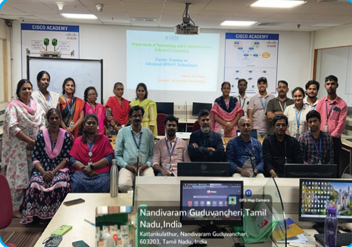

Computer Networking Specialization
Specialization Summary
The Networking Specialization under the Specialized Research Group (SRG) at SRM Institute of Science and Technology (SRM IST) focuses on next-generation network architectures, cybersecurity, and intelligent networking solutions. The program covers SoftwareDefined Networking (SDN), Network Function Virtualization (NFV), 5G, IoT security, and AI-driven networking. It integrates theoretical foundations with hands-on training through advanced laboratory facilities.
Faculty Members
Dr. K.Venkatesh
Associate Professor, NWC, SRMIST.
Dr. P.Visalakshi
Associate Professor, NWC, SRMIST.
Dr. K.Deepa Thilak
Associate Professor, NWC, SRMIST.
Dr. Murugaanandam S
Associate Professor, NWC, SRMIST.
Dr. K.Kalaiselvi
Associate Professor, NWC, SRMIST.
Dr. J.Godwin Ponsam
Associate Professor, NWC, SRMIST.
Dr. Arun A
Associate Professor, NWC, SRMIST.
Dr. V.Rajaram
Associate Professor, NWC, SRMIST.
Dr. D.Saveetha
Assistant Professor, NWC, SRMIST.
Dr. C.Fancy
Assistant Professor, NWC, SRMIST.
Mrs. G.Parimala
Assistant Professor, NWC, SRMIST.
Dr. Praveena Akki
Assistant Professor, NWC, SRMIST.
Dr. S.A.Angayarkanni
Assistant Professor, NWC, SRMIST.
Dr. B.Balakiruthiga
Assistant Professor, NWC, SRMIST.
Dr. M.Manickam
Assistant Professor, NWC, SRMIST.
Dr. M.Sundarrajan
Assistant Professor, NWC, SRMIST.
CISCO Center of Excellence (CoE)
CISCO CoE Networking lab setup in Department of NWC is state of art facility in demonstrating Software Defined Access with all required hardware like CISCO Catalyst server(DNAC), Cisco Identity Services Engine server (ISE), SDWAN Edge Routers, C9500 -Core switches, C9300 - Distribution Switches, C9200 Access layer switches of traditional networking. This lab is supported with Umbrella Security cloud licenses along with Meraki solutions for IoT - enterprise applications. Any student having hands on exposure with this setup will be most skilled networking engineer and will be the choice of the industry
Memorandum of Understanding (MoU)
The MoUs signed in the Specialization of Computer Networks (CN) are BOODSKAP Pvt. Ltd. (2023) and Orangewood Automation Pvt. Ltd. (2024). The BOODSKAP MoU, spanning three years, has led to various industry-academic engagements such as an IoT farm visit (2018), recruitment and training (2019), IoT Center of Excellence judging (2020), company visits, tech talks (2022), and a device purchase initiative (2023). The Orangewood Labs MoU, signed for five years, focuses on hackathons, internships, placements, value-added courses, collaborative projects, and sponsored research. These collaborations provide students with practical learning, research opportunities, and career growth in the field of Computer Networks and IoT
Activity Highlights
Empowering Faculty with Advanced Training
The Department of Networking and Communications successfully conducted multiple training sessions as part of the Computer Networking Specialization, ensuring faculty members stay updated with the latest technological advancements.
Training Sessions Overview
21CSE321J Training
Duration: 10 days (July 2024)
Key Focus: Enhancing foundational knowledge in computer networking.
Highlights:
- Covered OSI and TCP/IP models.
- Hands-on lab exercises for network topologies.
- Explored network security fundamentals.
- Interactive sessions on Packet Tracer.
Outcome:
: Faculty gained a strong understanding of networking principles, preparing them for advanced courses and industry certifications.
Cisco SD-WAN Operations and Deployment (SDWFND) 2.0
Date: 1st Oct - 4th Oct 2024 (3 days)
Key Focus: Software-Defined WAN (SD-WAN) architecture and implementation.
Highlights:
- Introduction to SD-WAN fundamentals and advantages over traditional WAN.
- Practical implementation of Cisco vManage, vBond, and vSmart controllers.
- Network security measures and traffic optimization using SD-WAN policies.
- Real-world use cases and best practices for enterprise SD-WAN deployment.
Outcome:
Faculty acquired hands-on expertise in SD-WAN operations, enabling them to train students in emerging networking trends.
Engineering Cisco Meraki Solutions Part 2 (ECMS2) 2.0
Date: 28th Oct - 30th Oct 2024 (3 days)
Key Focus: Cloud-managed network solutions and Cisco Meraki configurations.
Highlights:
- Advanced deployment of Cisco Meraki security, wireless, and switching solutions.
- In-depth exploration of dashboard automation and API integrations
- Network performance monitoring and troubleshooting using Meraki insights
- Hands-on implementation of zero-touch provisioning for large-scale networks.
Outcome:
Faculty developed expertise in cloudbased networking, preparing them to guide students in modern IT infrastructures.
Transforming to a Cisco Intent-Based Network (IBNTRN) 1.1
Date: 9th Dec - 13th Dec 2024 (5 days)
Key Focus: Leveraging AI-driven networking for automation and optimization.
Highlights:
- Understanding the transition from traditional to intent-based networking.
- AI-driven network automation for predictive analytics and fault detection.
- Policy-based networking to streamline enterprise connectivity.
- Integration of security and compliance measures into automated networks.
Outcome:
Faculty gained insights into nextgeneration networking solutions, equipping them to incorporate AI-driven methodologies in academia.
Implementing Cisco SD-WAN Solutions (ENSDWI) 3.0
Date: 16th Dec - 20th Dec 2024 (5 days)
Key Focus: Advanced SD-WAN deployment and management strategies.
Highlights:
- Comprehensive understanding of SD-WAN architecture, features, and components.
- Deep dive into edge connectivity, VPNs, and secure segmentation.
- Configuration and optimization of application-aware routing policies.
- Implementing redundancy, failover, and disaster recovery strategies.
Outcome:
Faculty enhanced their expertise in SD-WAN, enabling them to lead industry-aligned networking courses and research
Impact & Future Initiatives:
These training programs have significantly enhanced faculty expertise in modern networking solutions. The department is committed to continuous professional development and looks forward to introducing new certifications, workshops, and industry collaborations in 2025 to further bridge the gap between academia and industry advancements.